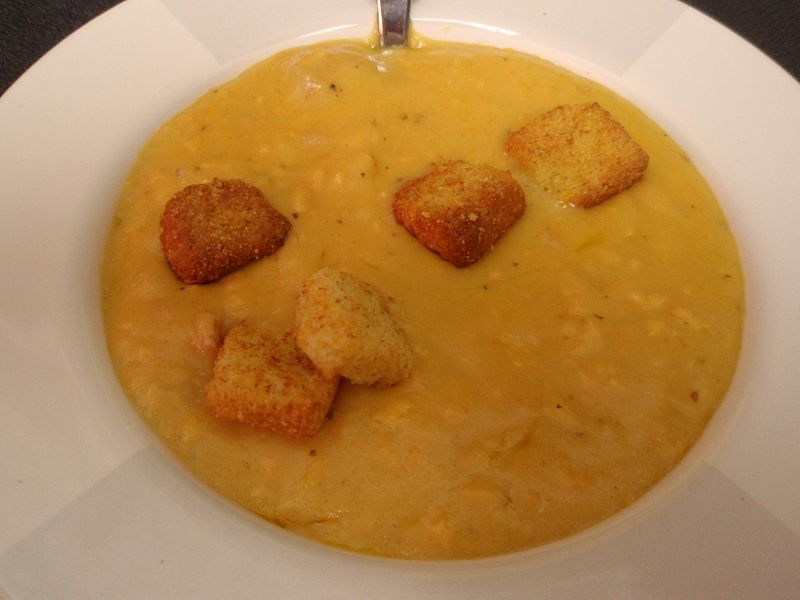

Cheddar and Cider Soup

Description
Something of the cheese fondue here. I suggest using a full-flavoured extra mature cheddar.
Stock can be chicken or vegetable but either way homemade is preferable.
Ingredients
- Onions x2
- Butter 30g
- Carrots x2
- Celery 1 stick
- Milk 400ml
- Plain Flour 45g
- Stock 400ml
- Dijon Mustard 1 tsp
- Cheddar 400g
Method
- Peel and roughly chops the onions before gently frying with the butter in a deep saucepan over moderate heat.
- Finely dice the carrot and celery before adding to the onions to continue softening gently for 10 mins.
- Stir the flour into the vegetables and cook out the flour for 3 mins then add the milk and stir to a thick sauce.
- Pour in the stock and cider bringing it to the boil then reducing heat to simmer for a few mins. Add mustard and season to taste.
- Grate the cheddar and stir into soup to melt, making sure not to boil as this can cause the soup to split. Serve with crusty bread to dunk.
Return to Recipe Hub